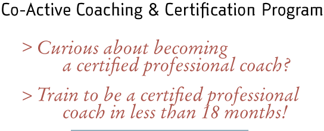

Since 1992, The Coaches Training Institute has impacted the lives and careers of thousands of managers and leaders around the world with our Co-Active Coaching and Certification program.
If you are curious about what it takes to become a certified professional coach, there has never been a better time to take a look at CTI’s ICF accredited coaching program. In as little as 18 months you can have an exciting new career as a certified coach!
Who Benefits
• Individuals wanting to become certified professional coaches.
• Individuals in vocational transition who want a new career.
• People wanting to acquire new communications, relationship and leadership skills in their work and personal environment, such as managers in sales, marketing and human resource roles, health professionals and teachers.
The Program
The Co-Active Coaching and Certification program is made up of two basic components—
the Core Curriculum and the Certification Program.
CTI’s Co-Active Coaching curriculum is 100% experiential. It will provide you with a variety of models and approaches for working with clients. By seeing, feeling and doing, you quickly become familiar with the principles of Co-Active Coaching and will be able to immediately begin applying your coaching skills with all your clients.
CTI’s Certification Program is designed for practicing coaches who are committed to a professional level of coaching. This program not only increases your coaching abilities, it also provides the structure and support for you to build a thriving coaching practice.
For more information about our Co-Active Coaching program, please click here or call us at 1.800.691.6008, extension 703.